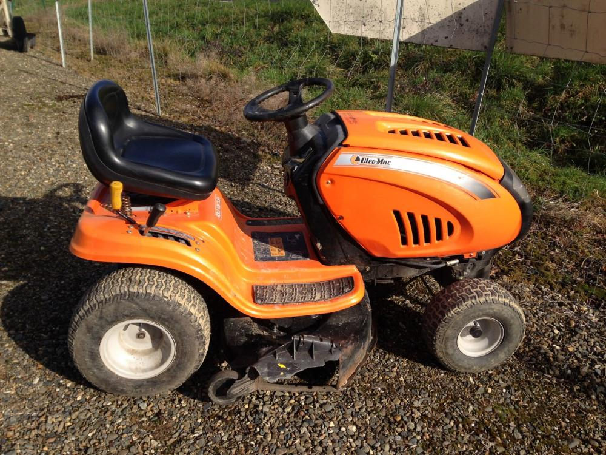
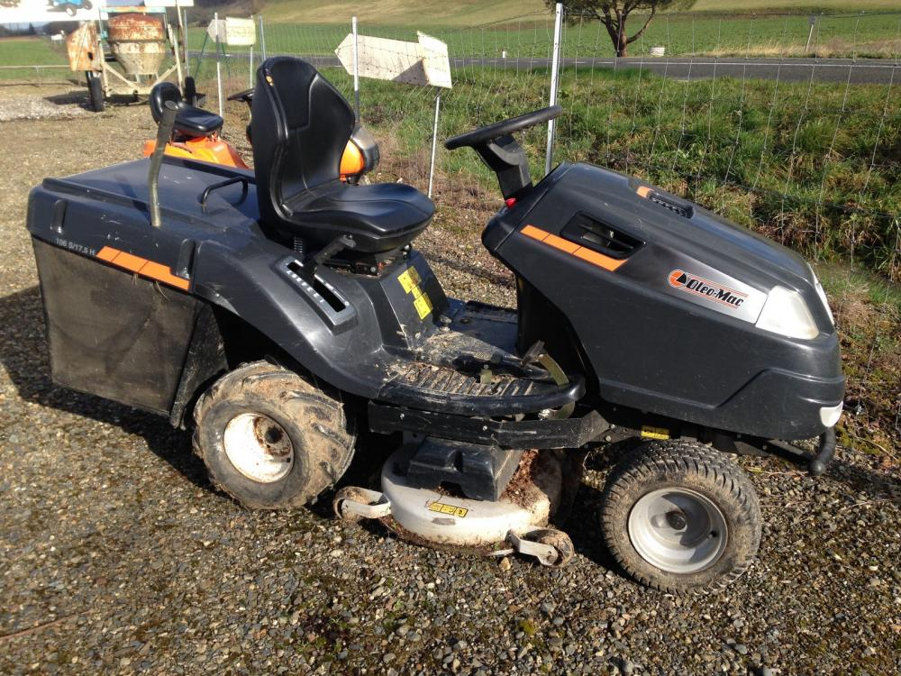

Reprise et mise en sécurité de parcs
Nous remettons en état les parcs et espaces verts négligés, pour qu'ils redeviennent sûrs et agréables.
Beaumarches · Gers · depuis 1996
Producteur grossiste d'arbres, d'arbustes et de conifères depuis 1996, les Ets Chatelard mettent leurs compétences techniques et botaniques au service de votre parc et de votre jardin.
Nous plantons chez vous les végétaux que nous cultivons à Beaumarches, et nous remettons en état les parcs laissés à l'abandon.
Nous remettons en état les parcs et espaces verts négligés, pour qu'ils redeviennent sûrs et agréables.
Les grands travaux de nettoyage et la taille de vos arbres, avec le matériel adapté.
Nouveaux massifs ou jardin à repenser : nous fournissons et plantons des végétaux de notre production.
Une pelouse semée par nos soins et un arrosage automatique pour la garder verte.
Des allées et des bordures qui dessinent votre jardin et en facilitent l'entretien.
Faites entretenir votre jardin par un professionnel et profitez de cet avantage.
Producteurs grossistes, nous vendons aussi au dépôt les végétaux que nous cultivons, selon la saison.
Ventes au dépôt : vendredi et samedi, de 9 h à 18 h
Venir au dépôtPour l'entretien de votre terrain, retrouvez au dépôt de Beaumarches du matériel de motoculture.
Nous demander

Pour un devis, une plantation ou l'entretien de votre parc, appelez-nous ou demandez à être rappelé gratuitement.